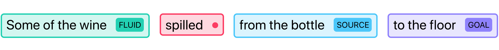
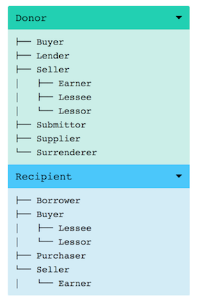

Welcome to myValencer's manual!
myValencer is a free and opensource web application to query valence patterns in FrameNet.
Help us improve it by reporting bugs or requesting features on Github or by contacting us via email.
myValencer currently supports the following functionalities:
- Annotations: displays all annotated sentences exemplifying an input valence pattern.
- Frames: displays all frames which contain at least one lexical unit which arguments are realized in a specified input valence pattern.
- Lexical units: displays all lexical units which arguments are realized in a specified input valence pattern.
- Cluster: displays the cluster of frames matching an input valence pattern, with their respective (frame) relations.
Warning
This manual contains references to FrameNet concepts necessary to use myValencer. Details regarding those concepts -- as reproduced in this manual -- may contain errors or approximations. For an accurate and exhaustive overview of FrameNet concepts, always refer to the FrameNet book.
What is a valence pattern?
A valence pattern refers to the range of combinatorial possibilities of valences for each lexical unit, where valences are the syntactic realizations of frame elements, represented as triplets of frame element (FE), phrase type (PT) and grammatical function (GF).
The following sentence provides an example of FrameNet annotation for the valence
pattern Fluid.NP.Ext Goal.PP.Dep Source.PP.Dep where the predicate
spill.v evokes the Fluidic_motion frame:

Here, the Fluid FE is realized as the subject Ext of a noun phrase NP,
and the Goal and Source FEs are realized as objects Dep of prepositional
phrases PP.
You can find a summary of FrameNet's PT and GF below. For a detailed account, refer to the FrameNet book. For a detailed account of Frame Elements, you can browse the Frame Index on the FrameNet website.
Query HowTo
myValencer is designed to take as input combinations of FE.PT.GF triplets, such as:
Fluid.NP.Ext Goal.PP.Dep Source.PP.Dep
The above query will return all annotation sets containing at least the
three distinct Frame Elements Fluid, Goal and Source in their specified
syntactic realizations. Valences must be separated by a whitespace and triplets
FE.PT.GF in a single valence are separated by a dot.
Combinations of valences are orderless, so the above query is equivalent to:
Goal.PP.Dep Fluid.NP.Ext Source.PP.Dep
Similarly, triplets inside a given valence are also orderless, so
that Goal.PP.Dep is equivalent to PP.Goal.Dep or to Dep.PP.Goal.
Queries are also case-insensitive, so the above queries are equivalent to:
fluid.np.ext goal.pp.dep source.pp.dep
Finally, the query system is flexible and accepts combinations of one, two or three elements per valence, such as:
Goal Fluid.Ext Source.PP
The above query will search for annotations containing a Goal FE in any
possible syntactic realization (PT.GF), a Fluid FE realized as an external
argument in any kind of phrase type, and a Source FE realized in a
prepositional phrase with any kind of grammatical function.
Use cases
Below are some possible use case for myValencer:
Analyzing the semantic scope of syntactic constructions
myValencer can be used to analyze the 'semantic scope' of a given syntactic construction by
querying for frames or lexical units matching the corresponding (syntactic) valence pattern.
For example, querying for the lexical units matching the
prepositional indirect object construction NP.Ext NP.Obj NP.Dep returns
349 unique lexical units found in 207 unique frames.
Paraphrasing
myValencer can be used to search for paraphrasing candidates by querying lexical units
matching a given valence pattern, as FrameNet is characterized by relatively narrow-scope
frames and frame elements. For examples, querying for the lexical units matching
the vp Fluid.NP.Ext Goal.PP.Dep Source.PP.Dep corresponding to sentences such as
Some of the wine spilled from the bottle to the floor, returns lexical units
such as drip.v, leak.v, splash.v or trickle.v.
Concordancing
myValencer can be used to extend the capabilities of traditional concordancers by enabling searching for complex combinations of semantic and syntactic patterns, not bounded by specific lexical items. Querying for annotations returns a list of annotated sentences matching a given valence pattern, with the corresponding labels as well as all the relevant information pertaining to the lexical unit and its frame.
Options
There are two options than can be checked for each query:
withExtraCoreFEs (default true)
Specifies whether or not valence patterns
containing other non-core frame elements beside those specified in input should
be included in the output results. Setting this option to false will return
only valence patterns containing the specified FE as core FEs, and only
non-core FEs as extra FEs.
strictVUmatching (default false)
Specifies whether or not a strict
matching of valence units should be applied, tolerating extra non-core FEs or not.
Setting this option to true will not tolerate other non-core FEs and will
return only valence patterns matching exactly the specified valence units specified in input.
Hierarchy
For users not necessarily familiar with the rich taxonomy of FrameNet frames and frame elements, we have added two important features to the application:
Frame Element Hierarchy
When querying for a given valence pattern containing a set of specified frame elements,
the Annotations tab will display on the right a toggle of frame element hierarchy
trees specifying, for each input frame element, the tree of its children (the
frame elements in an Inheritance FE-to-FE relationship with it).
For example, querying for Donor.NP.Ext Recipient.PP.Dep will display the
following trees for both the Donor and the Recipient FEs:

Frame Hierarchy
Similarly, we have added, under each frame name on the Frame tab, the list of
the frame's parents (the frames with which the current frame is in an
Inheritance Frame-to-Frame relationship).
For example, rendering the frame Giving will show that it inherits
from Lose_possession and Intentionally_act, one (or more) of which inherits from
Eventive_affective which itself inherits from Event.
PT GF overview
PT labels
GF labels
| Label | Name | Details | Example |
|---|---|---|---|
| Ext | External Argument | ||
| Obj | Object | ||
| Dep | Dependent | ||
| Head | Head noun modified by attributive adjective | ||
| Gen | Genitive determiner | ||
| Appos | Appositive |
Mapping to UD and PENN
Warning
This mapping is tentative and currently here to illustrate the potential for using myValencer with various PT.GF nomenclatures. If you would like to contribute, please join our discussion.